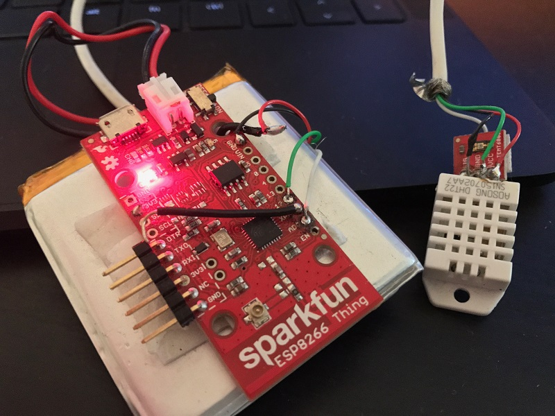

Web Dev
Speeks (socket-based web chat)
Node.JS, Express, Socket.IO, Jquery, Sass (CSS), Javascript, HTML
Working with Node.JS and Socket.IO for this project was extremely fun and satisfying. I always liked Javascript, but getting to use it for back-end work as well was great. Since Speeks.us uses sockets to chat between people, no actual chat data gets stored on the main server.
Ruby on Rails, PostgresQL, Jquery, Sass (CSS), Javascript, HTML

This was a really fun project to work on. The number of iterations the design went through allowed me to experiment with art styles and my own artistic taste before landing on this design choice. Working with Ruby on Rails and PostgresQL also allowed me to flex my muscles with back-end design in order to vastly improve the function of the site.
Node.JS, Express, Jquery, Sass (CSS), Javascript, HTML
This site was a treat to develop, for I got to write the front-end as well as the album management/upload server. For the server side, I rolled a secure login, upload and gallery management server from scratch that work well at this company's scale.
Jquery, Sass (CSS), Javascript, HTML
Working on this project at Grovelight Studio really helped me come into my own with front-end web design and allowed me to work with tools such as Jquery and its array of plugins as well as some initial work with Wordpress.
Mobile
Go, Grandpa!
C#, Unity3D, Android, iOS
This is a mobile-first 2D sidescrolling game based on some of the flash games my friends and I used to play a long time ago when we first became fascinated with computers. With playful mechanics and simple art style, Go, Grandpa! was a fun game to develop as well as still play.
Sketch, Adobe CC, Balsamiq
During my schooling, I took a set of mobile design courses that led me through the process of designing a modern, responsive mobile app from start to finish in a thorough and professional way. The iterations and process for this were based closely on the methods of professional mobile design shops.
Hardware
Homebrew CPU
EagleCAD, 74XX logic design, electronics
I started dreaming of creating my own processor from low level logic circuits during grade school, however it wasn't until recently that I gained the skills necessary to design and manufacture the printed circuit boards for it. This project consists of four 8-bit registers and a basic ALU, as well as a bus board so far. I plan on designing and creating the instruction register and related circuitry next.
Fridge Monitor
ESP8266, Node.js, Chart.js, circuit design

When the control unit in my refigerator broke, I took it upon myself to fix it as well as create something fun. I used a spare ESP8266 wifi module I had as well as a DHT22 temperture and humidity sensor to put together my own internet-connected fridge control unit. I also wrote a minimal Node server to collect and graph the data using Chart.js.
Transistor Logic Gates
EagleCAD, circuit design
An earlier project of mine, but one where I probably learned the most. These small circuit boards are individual logic gates, built using single 2N222 transistors and 10K resistors. Learning the ins and outs of transistor datasheets and circuit design was fun and satisfying.